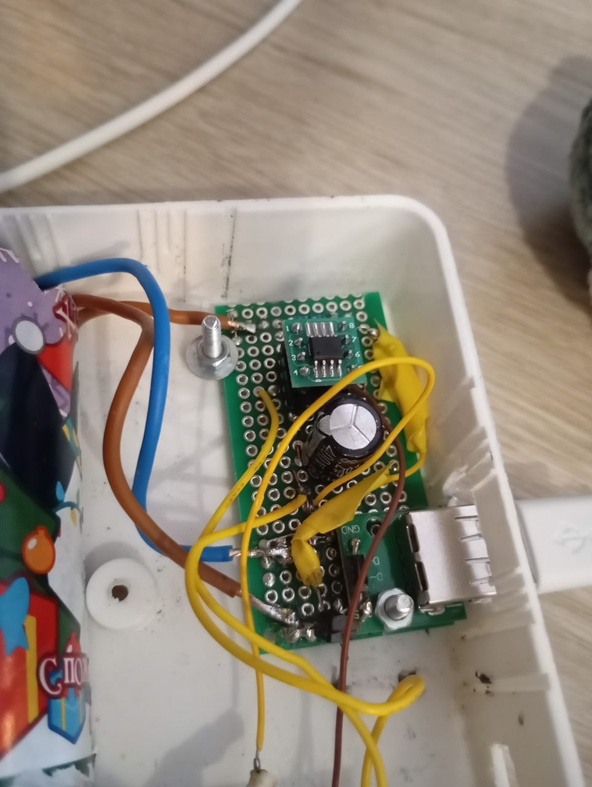
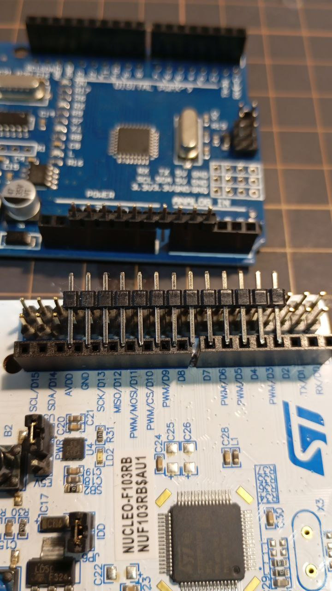

2026-03-01
16:39
Штош. Это была моя первая попытка собрать что-то законченное.
Ретроспектива мини-проекта:
Начертил элемент на схеме, но забыл оставить для него место на плате, и пришлось вкорячивать - ✅ Поставил транзистор задом наперед - ✅ Забыл предусмотреть, как плата будет крепиться к корпусу - ✅ Подвел провода не к тем пинам МК, потому что перед этим перевернул плату, и минут 20 не мог понять, почему не работает - ✅
Очень хочу перейти к тому, чтобы проектировать и заказывать платы, но что-то мне подсказывает, что там я буду совершать те же ошибки, но стоить это мне будет дороже.
Из доработок:
В целом этим небольшим опытом я доволен. Чувство, когда оно начинает работать, - великолепно.
Как и чувство, когда оно не работает нифига, хотя вот на предыдущем шаге работало же.
Видео: https://disk.yandex.ru/i/tofG1TMmA7SXGA

16:39
19:36
Рандомный факт:
Расстояние между гребенками на digital стороне Arduino
несовместимо с DIP форматом.
И, судя по ответу на Stack Overflow (https://electronics.stackexchange.com/questions/940/arduino-pin-spacing) - это ошибка, которую впоследствии решили не исправлять для обратной совместимости.
Но теперь это приводит к тому, что нельзя просто накинуть перфборд на Arduino.
